🏥 Clinical safety
Wrong body part, flipped images, anatomy/viewpoint mismatches, and device-related cues that should be caught before any diagnosis.
Pre-diagnostic visual sanity checking
Exposing the Medical Moravec's Paradox in VLMs via clinical triage.
MedObvious asks the question that comes before diagnosis: is the input coherent and safe to interpret? The benchmark isolates input validation as a set-level consistency problem over small multi-panel image grids, with progressive tiers, multiple evaluation protocols, and explicit negative controls.
The full dataset, evaluation code, and models will be published shortly. Stay tuned!
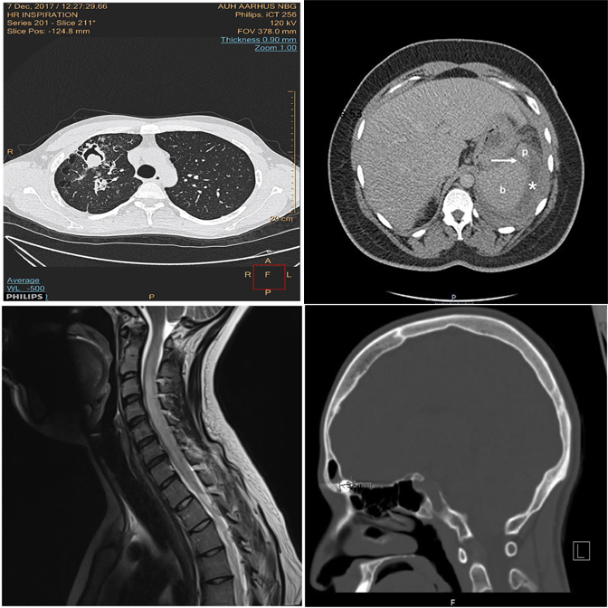
✓ Answer: bottom-left — an MRI scan among CT scans.
Why this benchmark matters
In clinical practice, interpretation begins with input verification: modality, anatomy, viewpoint, and basic image integrity must be correct before reasoning about pathology. MedObvious measures this pre-diagnostic gatekeeping ability directly.
This is especially important for multi-image and agentic workflows, where models operate over multi-view ultrasound, CT/MRI series, or viewer layouts. A single inconsistent panel can invalidate downstream reasoning.
Wrong body part, flipped images, anatomy/viewpoint mismatches, and device-related cues that should be caught before any diagnosis.
Synthetic inconsistencies test whether decisions are anchored in visual evidence rather than language priors or report-style completion.
705 tasks contain no outlier, directly measuring false alarm rates when all panels are internally consistent.
Benchmark Design
MedObvious abstracts multi-view clinical workflows into small grids where the model must identify an outlier — or correctly state that none exists.
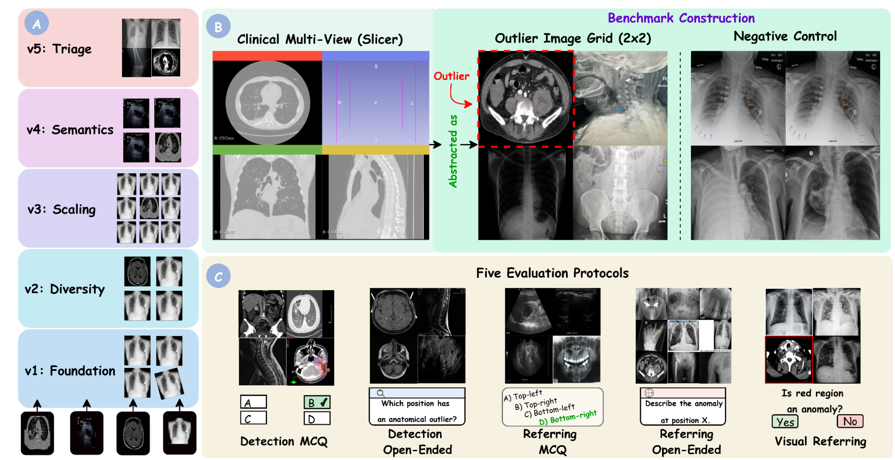
From basic modality mismatches (T1) to subtle clinical pathology and hardware detection (T5).
Detection MCQ/Open, Referring MCQ/Open, and Visual Referring test localization, description, and verification.
705 tasks contain no outlier, directly measuring false alarm rates that are critical for safe deployment.
Five Tiers
Each tier introduces new complexity. Real examples from the benchmark are shown alongside each tier description.
Basic modality mismatches in 2×2 grids. E.g., one MRI scan among CT scans.
Broader modality pool with finer intra-class appearance variability in 2×2 grids.
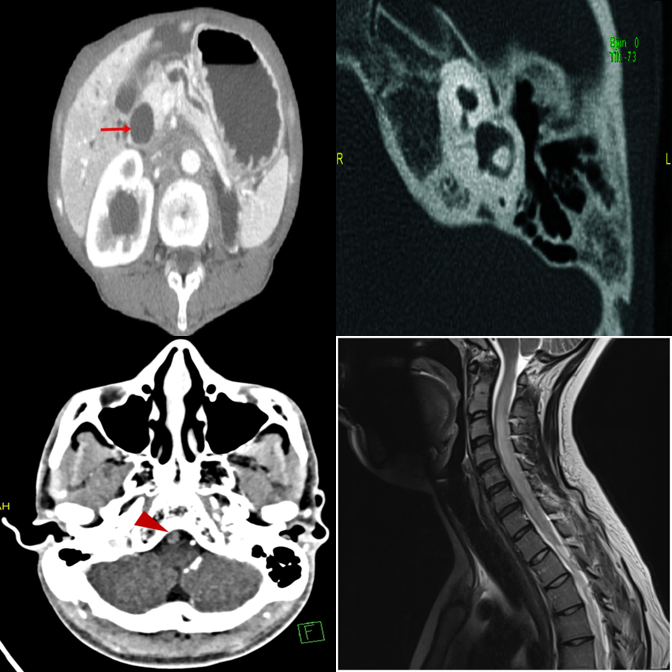
Dense 3×3 grids with 8 distractors. Systematic comparison is essential.
Anatomy and viewpoint mismatches. E.g., one abdomen CT among chest X-rays.
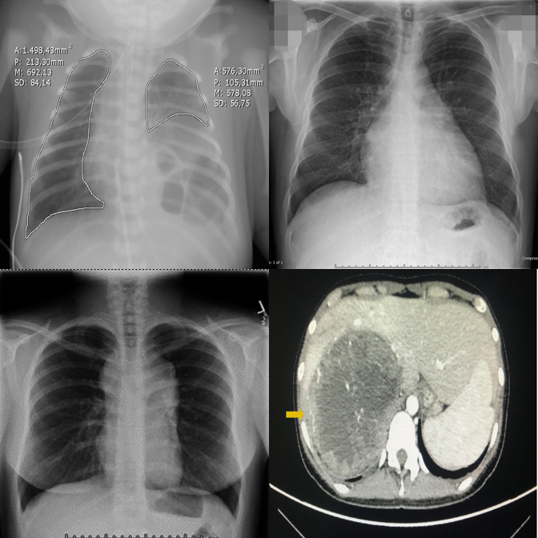
High-saliency clinical failures: surgical hardware, fractures, gross pathology.
Results
Across 17 VLMs spanning general, medical, and proprietary families, performance is strikingly uneven.
Qwen2.5-VL-7B
Lingshu-7B
Gemini-2.0-Flash
Across all tasks
Tasks A–E correspond to Detection MCQ, Detection Open, Referring MCQ, Referring Open, and Visual Referring. Pos(+)/Neg(−) = accuracy on positive/negative samples.
| Model | Task-A | Task-B | Task-C | Task-D | Task-E | Pos(+) | Neg(−) | Avg |
|---|---|---|---|---|---|---|---|---|
| General Open-Source VLMs | ||||||||
| LLaVA-1.5-7B | 40.4 | 22.3 | 22.1 | 35.7 | 50.0 | 37.5 | 31.9 | 34.3 |
| Qwen2-VL-7B | 32.3 | 49.5 | 72.7 | 25.1 | 53.1 | 56.3 | 28.7 | 45.4 |
| Qwen2.5-VL-7B | 58.7 | 82.1 | 75.3 | 29.7 | 65.1 | 60.9 | 70.7 | 63.2 |
| Qwen3-VL-8B | 31.2 | 32.7 | 80.8 | 38.7 | 52.9 | 68.9 | 2.9 | 44.0 |
| InternVL2.5-8B | 56.3 | 56.3 | 69.7 | 26.8 | 51.7 | 59.7 | 42.5 | 51.9 |
| InternVL3-8B | 38.5 | 43.6 | 80.4 | 27.6 | 50.2 | 64.6 | 16.6 | 45.9 |
| Pixtral-12B | 31.0 | 22.5 | 76.6 | 26.3 | 51.9 | 59.5 | 5.3 | 39.0 |
| Medical Open-Source VLMs | ||||||||
| LLaVA-Med-7B | 10.0 | 36.8 | 21.2 | 23.4 | 50.0 | 37.1 | 17.5 | 28.0 |
| Fleming-8B | 26.8 | 23.8 | 78.3 | 23.8 | 50.0 | 57.4 | 5.3 | 37.9 |
| MedGemma1.5-4B-IT | 23.6 | 86.1 | 43.4 | 19.5 | 66.6 | 44.6 | 64.1 | 49.7 |
| Lingshu-7B | 39.3 | 78.5 | 79.5 | 26.8 | 61.9 | 66.8 | 43.8 | 56.6 |
| Proprietary VLMs | ||||||||
| Gemini-2.0-Flash | 54.2 | 42.7 | 85.9 | 35.7 | 69.3 | 75.4 | 25.6 | 55.5 |
| Gemini-2.5-Flash | 67.2 | 45.5 | 80.4 | 31.9 | 55.9 | 74.1 | 26.3 | 54.4 |
| GPT-4o | 47.2 | 50.4 | 62.8 | 26.3 | 61.7 | 68.0 | 22.7 | 48.4 |
| GPT-4.1-nano | 25.3 | 16.8 | 26.3 | 18.3 | 55.1 | 34.9 | 21.4 | 28.3 |
| GPT-4.1-mini | 41.9 | 32.9 | 53.1 | 29.3 | 64.2 | 64.0 | 13.6 | 42.7 |
| GPT-5-nano | 43.4 | 41.7 | 82.5 | 28.9 | 63.4 | 73.1 | 14.8 | 49.6 |
| Human expert | 82.1 | 85.7 | 82.1 | 90.9 | 92.9 | 89.4 | 95.7 | 88.4 |
Per-tier overall accuracy (%). Tiers increase in difficulty from T1 (foundation) to T5 (triage).
| Model | T1 | T2 | T3 | T4 | T5 | All |
|---|---|---|---|---|---|---|
| General Open-Source VLMs | ||||||
| LLaVA-1.5-7B | 35.2 | 40.4 | 21.6 | 42.5 | 36.7 | 35.2 |
| Qwen2-VL-7B | 50.9 | 47.2 | 37.2 | 52.8 | 39.6 | 45.5 |
| Qwen2.5-VL-7B | 68.8 | 67.2 | 50.5 | 84.0 | 49.2 | 63.9 |
| Qwen3-VL-8B | 47.2 | 48.9 | 34.7 | 53.4 | 32.8 | 43.4 |
| InternVL2.5-8B | 58.8 | 56.0 | 33.0 | 67.2 | 49.3 | 52.8 |
| InternVL3-8B | 50.4 | 50.4 | 37.2 | 57.1 | 33.9 | 45.8 |
| Pixtral-12B | 45.0 | 41.4 | 26.3 | 43.9 | 33.8 | 38.7 |
| Medical Open-Source VLMs | ||||||
| LLaVA-Med-7B | 32.7 | 32.5 | 28.8 | 26.8 | 25.0 | 29.1 |
| Fleming-8B | 41.8 | 43.9 | 29.1 | 39.0 | 31.4 | 37.0 |
| MedGemma1.5-4B-IT | 59.7 | 53.7 | 37.2 | 53.7 | 53.5 | 51.5 |
| Lingshu-8B | 62.9 | 64.7 | 48.8 | 63.1 | 46.0 | 57.1 |
| Proprietary VLMs | ||||||
| Gemini-2.0-Flash | 59.3 | 61.0 | 56.3 | 66.8 | 34.6 | 55.6 |
| Gemini-2.5-Flash | 59.0 | 62.7 | 55.2 | 62.1 | 35.0 | 54.8 |
| GPT-4o | 54.3 | 56.0 | 45.2 | 59.6 | 34.6 | 49.9 |
| GPT-4.1-nano | 29.3 | 31.8 | 20.2 | 21.8 | 37.5 | 30.1 |
| GPT-4.1-mini | 47.7 | 52.2 | 36.1 | 50.9 | 33.5 | 44.1 |
| GPT-5-nano | 52.5 | 56.6 | 46.6 | 61.2 | 33.2 | 50.0 |
When no outlier exists, most VLMs hallucinate one. Qwen3-VL-8B: 2.9% on negatives. Humans: 95.7%.
Scaling from 2×2 to 3×3 causes steep drops. Qwen2.5-VL drops from 68.8% (T1) to 50.5% (T3).
LLaVA-Med-7B averages only 28.0%, worse than several general-purpose models.
Gemini-2.0-Flash: Task-C 85.9% vs Task-D 35.7% — a 50-point gap between MCQ and open formats.
GPT-5-nano (49.6%) nearly matches GPT-4o (48.4%).
Even the best model (MedGemma: 53.5%) fails nearly half the time on clinical hardware detection.
Qualitative Examples
Each example shows the input grid with its protocol-specific query alongside predictions from representative models. Visual Referring examples use images with a red bounding box highlighting a specific panel.
Correctly identifies the MRI scan as the modality outlier.
Exhibits strong position bias — always defaults to A regardless of content.
Picks the wrong quadrant despite the correct region.
The dense 3×3 layout overwhelms systematic comparison — picks wrong column.
Falls back to default position under uncertainty in the dense grid.
3×3 grids universally expose shallow pattern matching.
Referring MCQ gives a text hint about the anomaly type, making it easier to verify.
Cross-anatomy mismatches are easier when the anomaly type is described.
Referring MCQ typically achieves higher accuracy than detection protocols.
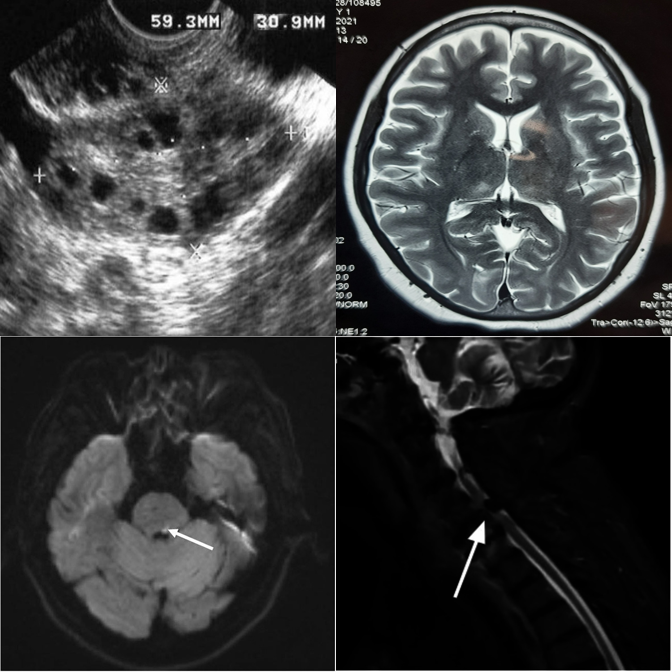
Open-ended generation reveals weaker grounding than constrained MCQ options.
Medical fine-tuning does not help — position bias dominates in open format.
Smallest proprietary model struggles with open-ended clinical reasoning.
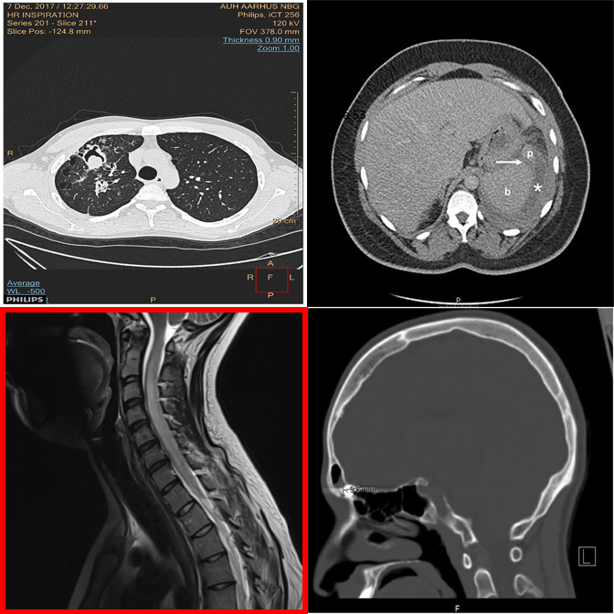
When pointed directly at the outlier, the model can confirm differing modality.
Fails to recognize the modality difference even when the outlier is highlighted.
Medical VLM incorrectly denies an obvious modality mismatch.
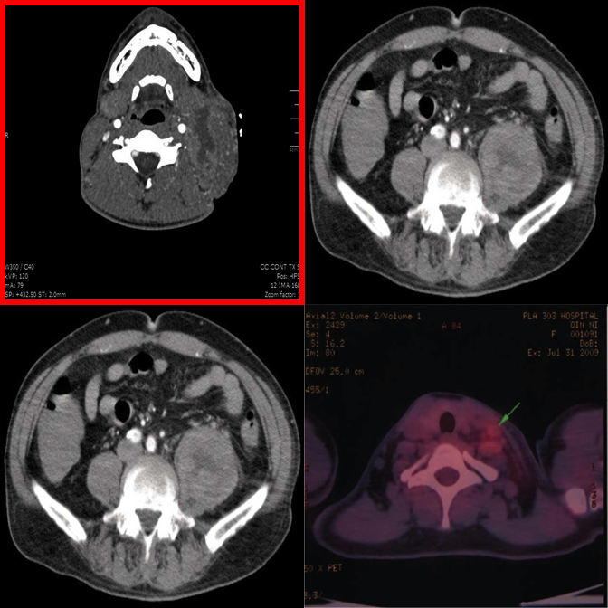
Hallucinates an anomaly in the highlighted panel despite it being consistent.
"Always-find-something" bias is triggered by the red box visual cue.
Best negative control accuracy among medical VLMs — capable of restraint.
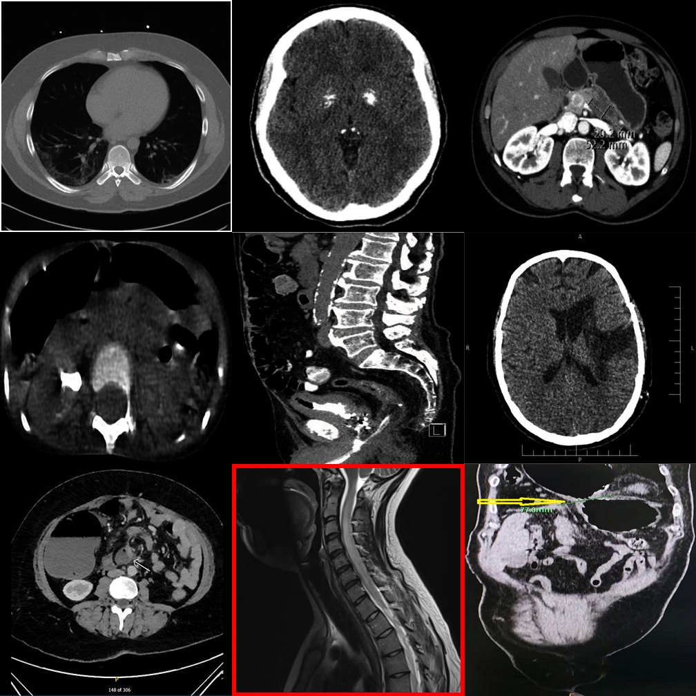
Dense 3×3 grids make it harder to compare even when the outlier is highlighted.
Smaller proprietary models struggle with visual referring on larger grids.
Even the latest reasoning models fail on 3×3 visual referring tasks.
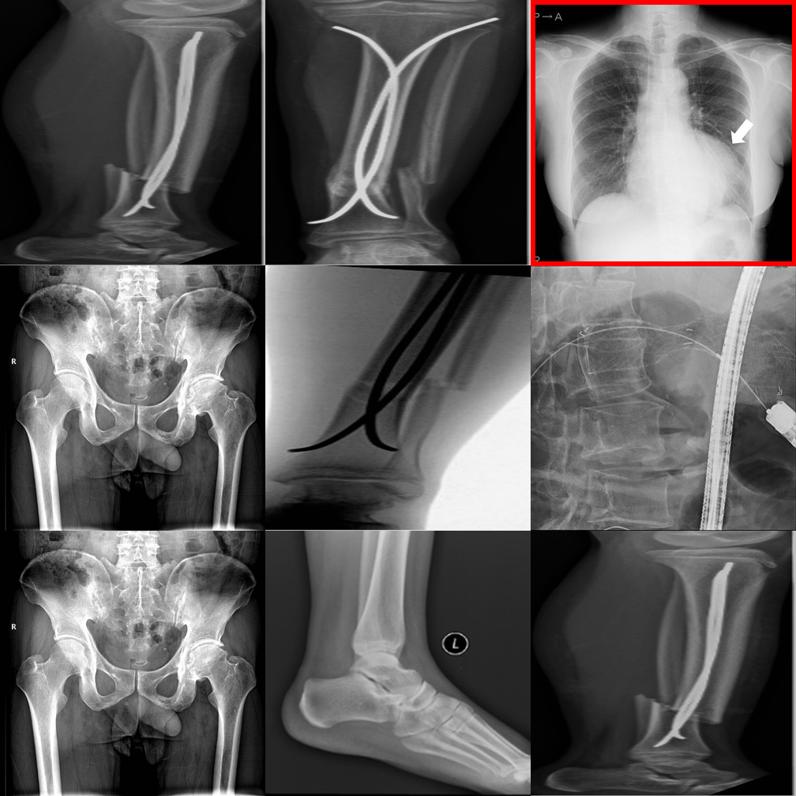
Incorrectly flags a perfectly consistent 3×3 negative control as an outlier.
Hallucinates a detailed physical abnormality despite the uniform grid.
Shows strong "always-find-something" bias triggered by the bounding box.
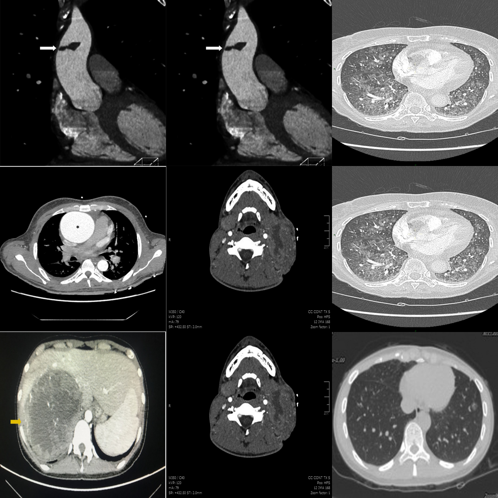
Fabricates a difference in a perfectly consistent 3×3 grid.
Generates plausible-sounding but entirely fabricated clinical reasoning.
One of few models capable of correctly suppressing false alarms on 3×3 grids.
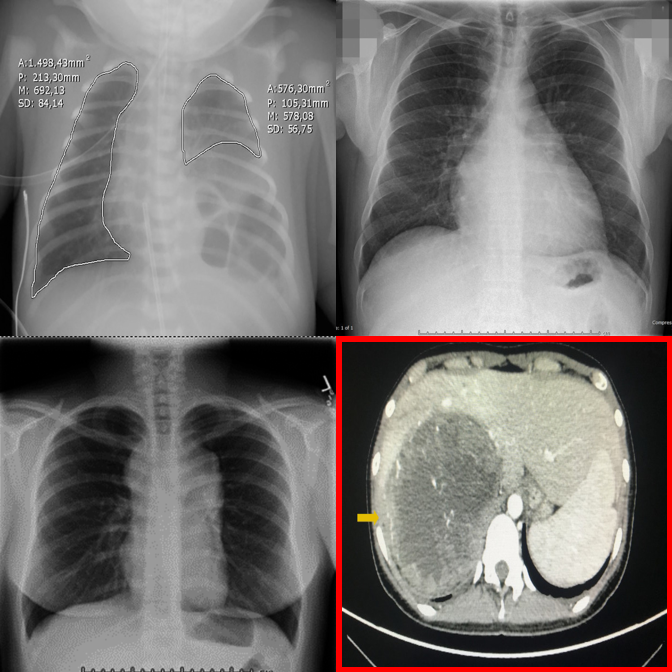
Proprietary models perform best on visual referring with clear anatomy differences.
Cross-anatomy mismatches are well handled when the panel is directly highlighted.
Medical fine-tuning on LLaVA produces the worst accuracy (28.0%) across all protocols.
Resources
Full benchmark description, methodology, and evaluation results.
Download the short animated teaser walkthrough.
@inproceedings{medobvious2026,
title = {MedObvious: Exposing the Medical Moravec's Paradox in VLMs via Clinical Triage},
author = {Ufaq Khan and Umair Nawaz and L D M S S Teja and Numaan Saeed and Muhammad Bilal and Yutong Xie and Mohammad Yaqub and Muhammad Haris Khan},
journal = {arXiv preprint arXiv:2603.22286},
year = {2026}
}